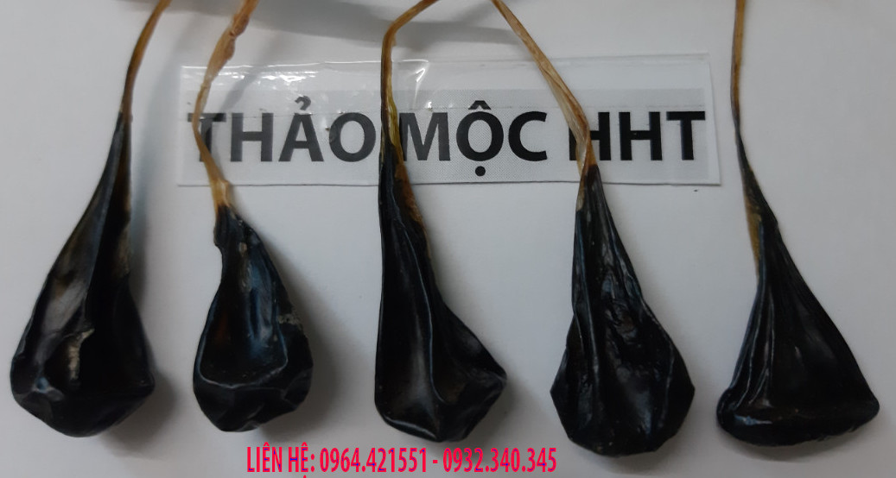
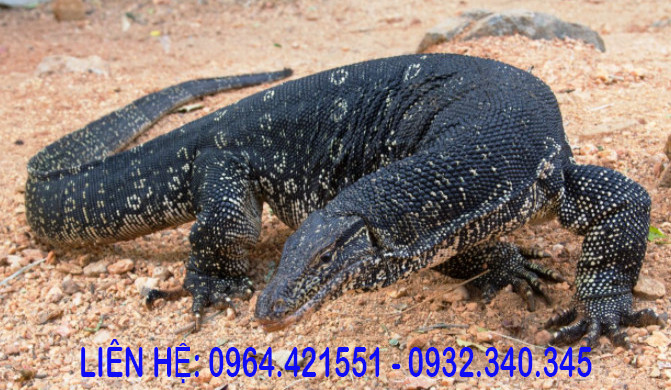

MẬT KỲ ĐÀ¶
Mật kỳ đà có nhiều tác dụng được sử dụng rộng rãi trong nhân dân với nhiều tác dụng tốt như chữa bệnh động kinh, bệnh sốt co giật, sốt cao co giật, hen phế quản, hen suyễn.
Mật kỳ đà có những đặc điểm gì?¶
Mật kỳ đà có tên gọi là mat ky da, có túi mật được lấy từ con kỳ đà. Con kỳ đà là loài bò sát khá lớn chúng có trọng lượng trung bình tầm 15kg, có những con nặng tới 30kg.
Mật kỳ màu xanh hoặc nâu do từng con kỳ đà, nhiều con mật màu xanh, nhiều con mật màu hơn nâu.
Mật có mùi gây gây, hăng hăng
Nếm có vị đắng ngọt
Khi mổ thì túi mật hay quả mật được lấy riêng, rồi treo ở trong bóng râm hay dưới mái nhà, nơi thoáng gió để túi mật nhanh khô.
Mật kỳ đà có tác dụng thông kinh mạch, giải độc, chữa hen suyễn, chống co thắt, chống co giật. Vì vậy mà mật kỳ đà có tác dụng tốt trong việc chữa trị bên hen phế quản, hen suyễn và bệnh động kinh
Con kỳ đà có những đặc điểm thế nào?¶
Con kỳ đà có hình dáng giống con thằn lằn nhưng to hơn nhiều, nó khá giống con cá sấu hoặc con rồng đất
Thân con kỳ đà dài tới 2m, có những con to còn dài hơn, da bên ngoài được phủ lớp vày, đầu nhỏ và mõm dài giống như con cá sấu, lưỡi chẻ đôi thè dài ra được giống như lưỡi con rắn.
Kỳ đà có hai loại là kỳ đà mốc và kỳ đà hoa, thường một số người còn gọi là kỳ đà núi và kỳ đà nước, thực ra cả hai loại đều sống được ở dưới nước và trên cạn. Khác nhau là hoa văn trên da mà thôi.
Kỳ đà là loài ăn thịt, một số nghiên cứu nói kỳ đà thuộc nhóm máu hàn, chân của kỳ đà có móng sắc nhọn, bám rất chắc, đuôi dài và nhọn, khá giống đuôi cá sấu.
Da kỳ đà loại có vân và loại có hoa, đều dùng làm thuốc và đồ trang sức.
Mật kỳ đà chữa được những bệnh nào¶
Trong mật kỳ đà có chứa thành phần a xít mật, steroid, và nhiều hoạt chất hóa học khác. Mật kỳ đà có vị đắng ngọt, có nghĩa là không đắng như các loại mật khác.
Theo kinh nghiệm trong nhân dân thì mật kỳ đà có tác dụng chữa co thắt, co giật, nên dùng để chữa bệnh hen phế quản, hen huyễn, sốt co giật, bệnh động kinh, thanh nhiệt, giải độc gan, giải độc cơ thế, thông kinh mạch.
Theo nghiên cứu của y học hiện đại trong mật có thành phần hóa học steroid, một chất giúp kháng viêm, giảm đau, hỗ trợ điều trị co thắt nên dùng để điều trị hen phế quản
Trong mật kỳ đà còn có acid giúp hỗ trợ tiêu hóa và hấp thu vitamin, các chất béo tan trong dầu. Điều này trùng hợp với kinh nghiệm nhân dân, mật kỳ đà có tác dụng chữa trị trẻ biếng ăn.
Nghiên cứu của y học hiện đại chỉ ra rằng mật có thể kiểm soát hoạt động tăng tiết cholesterl, triglyceride, glucose trong máu. Ngoài ra còn giúp bổ sung năng lượng dự trữ trong mỗi tế bào, làm cho cơ thể hấp thu tốt dinh dưỡng, giúp nâng cao sức khỏe.
Trong y học cổ truyền mật kỳ đà là một vị thuốc hay một thảo dược quý, nó không độc, có vị đắng, thường dùng chữa bệnh hen huyễn, hen phế quản, viêm phế quản co thắt, ngoài ra còn dùng thành thanh nhiệt, giải độc, chữa rắn cắn.
Tôi dùng mật kỳ đà chữa cho nhiều người bị hen phế quản và thấy kết quả rất tốt.
Cách phơi mật kỳ đà để bảo quản¶
Mật sau khi lấy từ con kỳ đà, nên phơi khô để dễ sử dụng và khử đi một số chất không tốt trong mật. Khi lấy được túi mật tươi từ con kỳ đà được rửa sạch qua nước ấm, rồi treo lên để khô nước, sau đó cho vào phơi âm can, có nghĩa là phơi dưới mái che để cho mật khô.
Nếu muốn để lâu thì mật nên phơi thật khô thì sẽ bảo quản được rất lâu mà không sợ bị hỏng.
Các bài thuốc chữa trị bệnh từ mật con kỳ đà¶
Thường dùng mật kỳ đà uống trực tiếp hoặc pha với rượu, hoặc với sữa, hoặc mật ong cho dễ sử dụng. Nếu bạn sợ uống mật sống thì có thể hấp cách thủy cho đảm bảo.
Cách dùng mật kỳ đà chữa hen phế quản, hen suyễn¶
Người lớn hay trẻ em bị hen phế quản, viêm phế quản co thắt nên dùng mật kỳ đà để chữa bệnh. Mật được chia thành các phần nhỏ, người lớn bằng hạt đậu xanh hoặc đậu đen, trẻ nhỏ chia thành các phần bằng hạt gạo, hạt thóc.
Liều dùng cụ thể như sau:¶
Với trẻ em dưới 3 tuổi mỗi lần dùng bằng 1 hạt gạo đến 1 hạt thóc
Trẻ trên 3 tuổi mỗi lần dùng bằng hạt thóc đến hạt đậu xanh
Người lớn mỗi lần dùng bằng hạt đậu xanh đến hạt đậu đen
Cách sử dụng mật để uống¶
Do mật kỳ đà có vị đắng, thực tế thì đắng ngọt, nhưng với trẻ nhỏ hoặc người không chịu được vị đắng thì nó rất khó uống vì vậy cần có một số cách uống mật như sau:
Mật được ngâm vào nước tầm 3 phút rồi để cho mềm ra sau đó dùng kéo cắt thành những phần nhỏ tùy vào độ tuổi.
Lấy miếng mật đã cắt đem ngâm vào 5ml nước nóng cho mật tan ra sau đó cho chút mật ong vào và cho người bệnh uống.
Hoặc lấy miếng mật đã cắt ngâm vào 5ml đến 10ml sữa, rồi đánh tan ra.
Cách dùng mật kỳ đà chữa rắn cắn.¶
Rắn cắn rất nguy hiểm nên khi bị rắn cắn nên sơ cứu bằng cách ga rô lại, sau đó có thể cho dùng bài thuốc:
Mật kỳ đà khô 1 gram, 5ml nước chanh, 10ml mật ong, 20ml nước sôi để nguội, khuấy đều rồi cho người bị rắn cắn uống, sau đo đưa đi viện ngay.
Cách chữa xoang mũi bằng lưỡi và mật kỳ đà.¶
Nguyên nhân gây lên xoang mũi là do trào ngược dạ dày, vì vậy nên chữa xoang kết hợp với chữa trào ngược dạ dày.
Cách chữa là dùng lưỡi kỳ đà đốt lên lấy khói và hít vào mũi, kết hợp với mật kỳ đà ngày uống 2 lần. Dùng liên tục trong vòng 1 tháng, thấy bệnh đỡ thì dùng thêm đến khỏi.
Cách dùng mật kỳ đà chữa bệnh sốt co giật¶
Có nhiều cách sử dụng, chúng tôi thường cho người bệnh dùng độc mật kỳ đà ngày dùng hai lần vào buổi sáng và buổi tối, thường dùng một tháng liên tục, thấy đỡ thì dùng tiếp, không đỡ thì dùng thuốc giải độc gan, giải độc cơ thể kết hợp với mật kỳ đà. Phương pháp cuối cùng là thuốc đặc trị kết hợp với mật kỳ đà để chữa dứt điểm bệnh sốt co giật.
Mật kỳ đà chữa tắc kinh ở phụ nữ.¶
Đây là một bài thuốc cổ có tác dụng điều hòa kinh nguyệt, bài thuốc như sau: Mật kỳ đà 1 gram Hạt cau khô 5 gram Hạt chanh khô 5 gram Các vị thuốc tán nhỏ, hòa với 20 ml rượu tầm 30 độ, khi uống thì khuấy đều bỏ bã, ngày dùng 2 lần. Có thể ngâm cả chai to dùng dần, mỗi ngày một vài chén rượu.
Mật kỳ đà chữa cao huyết áp¶
Người bị cao huyết áp nên dùng mật này ngày dùng hai lần, sử dụng liên tục trong một tháng, nếu thấy bệnh thuyên giảm thì dùng tiếp, bệnh không thuyên giảm thì nên dùng thuốc thải độc gan, thải độc cơ thể kết hợp với mật kỳ đà.
Mua mật kỳ đà ở đâu?¶
Bạn ở Hà nội có thể mua mật tại địa chỉ:
Nhà 23a ngõ 137 đường Bát Khối, Phường Long Biên, Quận Long Biên, Hà Nội
Liên hệ qua điện thoại, Zalo: 0932.340.345 hoặc số 0964.421.551
Bạn ở các tỉnh khác như Hồi Chí Minh, Bình Dương, Đồng Nai, Hải Phòng, Hải Dương, Thái Bình, Yên Bái, Nam Định, Hà Nam, Ninh Bình, Sài Gòn, Cần Thơ, Đà Nẵng .. Chúng tôi sẽ gửi qua đường bưu điện.
Bạn nhận hàng rồi thanh toán cho người mang hàng đến cho bạn.

Giá bán mật kỳ đà¶
Mật loại trên 1 gram giá 250k
Mật loại trên 1 gram giá 250k
Mật trên 2 gram giá 350k nhé
Chú ý khi sử dụng mật¶
Mat ky da có nhiều tác dụng và được sử dụng rộng rãi trong nhân nhân tuy nhiên bạn nên lưu ý khi sử dụng như sau:
Mua mật ở những nơi uy tín địa chỉ rõ ràng bạn có thể tham khảo mật kỳ đà tại thảo mộc hht
Khi sử dụng nên dùng đúng theo hướng dẫn, không nên dùng liều lượng lớn.
Bạn có thể hấp cách thủy mật kỳ đà trước khi dùng để đảm bảo an toàn vệ sinh, việc hấp cách thủy này không làm ảnh hưởng nhiều đến chất lượng mật.
Khi sử dụng mật nếu thấy có vấn đề gì thì liên hệ với người bán, một số ít người khi sử mật thấy mệt hơn thì nên giảm liều lượng xuống, kết hợp với nghỉ ngơi.